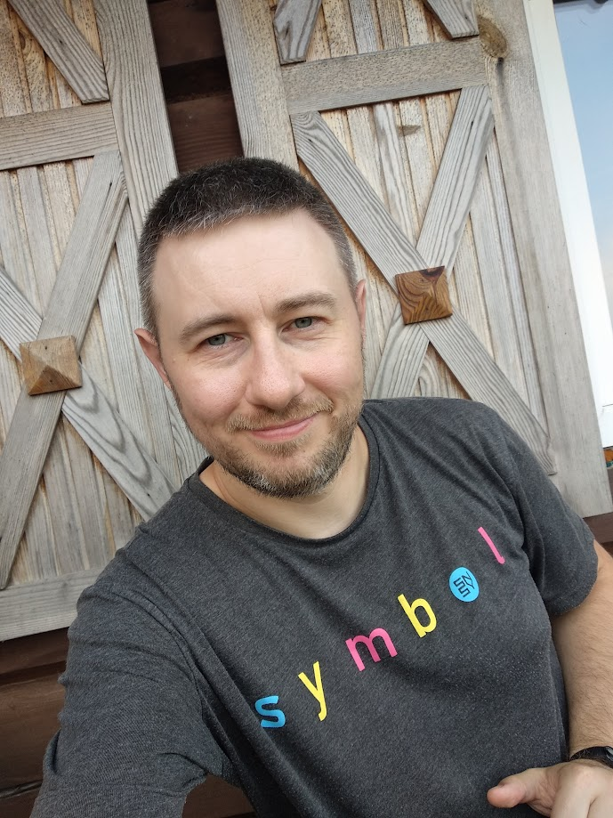

Completed the "Software Testing" course. Studied testing methodology, test design, documentation testing, usability testing, test plan creation, test case creation, bug reporting, and test result reporting.
const numbers = [1, 2, 3, 4, 5, 6, 7, 8, 9, 10];
const even = numbers.filter(n => n % 2 === 0);
console.log(Четные числа: ${even.join(', ')});